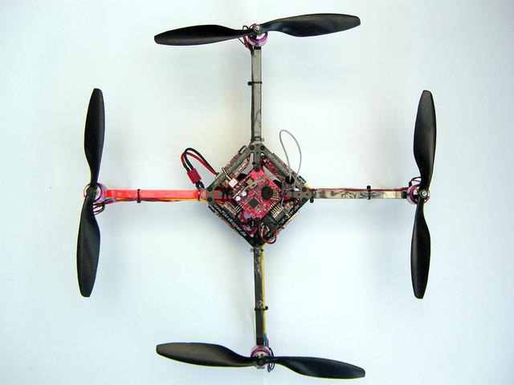

Equations of sizing scenarios (INSA)#
Written by Marc Budinger, INSA Toulouse, France
The purpose of this notebook is to illustrate on an existing drone example the main equations to be taken into account during the sizing. The selected drone is the MK-Quadro drone of Mikrokopter. The technical informations about the MK-quadro drone can be found in Annex 1 or on the website of MikroKopter company.
MK-Quadro from MikroKopter company

Propellers fundamental equations#
Propellers can be described in an ideal manner by the disk momentum theory. The dimensional analysis theory enables to describe with more details the propeller performances thanks to aerodynamic coefficients:
The thrust: \(T = C_{T,h} \rho \Omega^2 A R^2=C_{T,p} \rho n^2 D^4\) which gives \( = k_{TD} \Omega^2\) for a given propeller and a given diameter
The power: \(P = C_{P,h} \rho \Omega^3 A R^3=C_{P,p} \rho n^3 D^5 \) which gives the power \(P=k_{PD}\Omega^3\) or the torque \(M = k_{PD} \Omega^2\) for a given propeller and a given diameter
Remark: Be carefull, litterature shows 2 notations :
the propeller notation with n the propeller speed in [rev/s], D the diameter in [m], \(\rho\) the air density in [\(kg/m^3\)]
the helicopter notation with \(\Omega\) the propeller speed in [rad/s], R the radius in [m], \(A\) the disk area in [\(m^2\)], \(\rho\) the air density in [\(kg/m^3\)]
Exercice: compare the caracteristics of the following APC propellers to those of the MikroKopter MK-Quadro (GWS).
Characteristics |
APC Propeller |
GWS Propeller |
|---|---|---|
Diameter [inch] |
10 |
10 |
Pitch [inch] |
4.5 |
4.5 |
Thrust coef \(C_t\) [-] |
0.1125 |
|
Power coef \(C_p\) [-] |
0.0441 |
|
Thrust coef \(k_{TD}\) [\(\frac{N}{(rad/s)^2}\)] |
\(1.799.10^{-5}\) |
|
Torque coefficient \(k_{PD}\) [\(\frac{N}{(rad/s)^2}\)] |
\(3.054.10^{-7}\) |
with: \(1\) \(inch = 0.0254\) \(m\), \(\rho=1.18\) \(kg/m^3\)
D=10*0.0254 # [m] Propeller diameter
rho=1.18 # [kg/m^3] Air mass volumic (25°C)
# APC coefficients
# Ct=T/(rho * n**2 * D**4) (thrust coef.)
Ct=0.1125 # [-] Thrust coefficient, propeller notation
# Cp=P/(rho * n**3 * D**5) (power coef.)
Cp=0.0441 # [-] Power coefficient, propeller notation
Hover flight scenario#
The flight conditions in static hover are no forward speed, no vertical speed. This scenario influences in a very important way the autonomy of the vehicle. The thrust generated by propellers have to compensate the global weight of the drone and the load.
Hover flight (V=0)

Questions: with the given technical informations, calculate the requested thrust for each propeller for a no load hover flight.
Characteristics |
MK-MikroKopter drone |
|---|---|
Total mass ready to take off |
1350 g |
Number of propellers |
4 |
from math import sqrt
# Hover scenario
# ------------
Mass_total=1.35 # [kg] mass of the drone
N_prop=4 # [-] propeller number
d_prop=2.54e-2*10 # [m] propeller diameter
# to be completed
Questions: with the technical informations of GWS propellers calculate the propeller torque, speed and the mechanical power.
# Propeller characteristics
# -----------------------------
Kw =1.799e-5 # [N/(rad/s)^2] thrust coef
Mw = 3.054e-7 # [N.m/(rad/s)^3] torque coef
# to be compared to the ones calculated with regression
# GWS 10*4.5
d_prop=10*.0254 #[m] diameter
# Torque and RPM of motors
# -----------------------
# to be completed
#
print("----------------")
print("Propeller speed: %.2f rad/s or %.0f RPM"%(W,W/2/3.14*60))
print("Propeller torque: %.2f N.m "%(M))
print("Propeller power: %.2f W "%(M*W))
----------------
---------------------------------------------------------------------------
NameError Traceback (most recent call last)
Cell In[3], line 19
12 # Torque and RPM of motors
13 # -----------------------
14
15 # to be completed
16 #
18 print("----------------")
---> 19 print("Propeller speed: %.2f rad/s or %.0f RPM"%(W,W/2/3.14*60))
20 print("Propeller torque: %.2f N.m "%(M))
21 print("Propeller power: %.2f W "%(M*W))
NameError: name 'W' is not defined
Questions: with the following technical informations calculate the motor voltage and current, the autonomy of the drone if we assume an efficiency of 95% for electronic speed controllers (ESC) and a depth of discharge of 80% for the battery.
Component |
Characteristic |
Value |
|---|---|---|
Motor |
Poles pair number |
7 |
Load current |
6‐9A (DC) |
|
Max current |
10A (DC) |
|
Speed constant Kv |
760 tr/min/V |
|
Mechanical power |
110 W |
|
Dimensions |
28.8 x 29 mm |
|
Max efficiency |
76 % |
|
mass |
65 g |
|
Resistance |
R = 0.26 ohm |
|
Inertia |
J= 2.5e-5 kg.m² |
|
Battery |
Voltage |
LIPO 4S (4*3.7V) |
Capacity |
3300mAh |
|
mass |
329g |
# Voltage / current calculation
# -----------------------------
K_mot=(1/760)*60/2/3.14 # [V/(rad/s)] Motor torque coef
R_mot = 0.26 # [Ohm] Motor resistance
# Voltage / current calculation
# to be completed
print("----------------")
print("Motor current: %.2f A "%I)
print("Motor voltage: %.2f V "%U)
# Autonomy of the battery
# to be completed
print("----------------")
print("Battery current: %.2f A " % I_bat)
print("Battery voltage: %.2f V " % V_bat)
print("Autonomy of the battery : %.1f min" % Aut_bat)
----------------
---------------------------------------------------------------------------
NameError Traceback (most recent call last)
Cell In[4], line 12
7 # Voltage / current calculation
8
9 # to be completed
11 print("----------------")
---> 12 print("Motor current: %.2f A "%I)
13 print("Motor voltage: %.2f V "%U)
15 # Autonomy of the battery
16
17 # to be completed
NameError: name 'I' is not defined